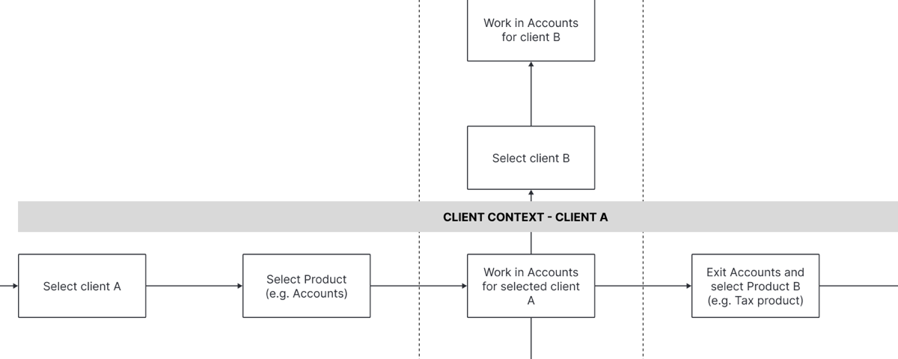
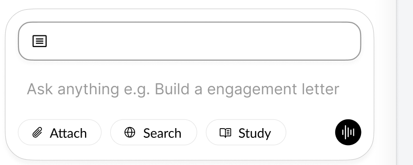
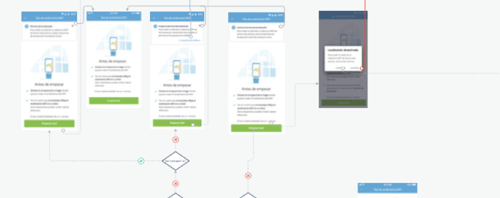
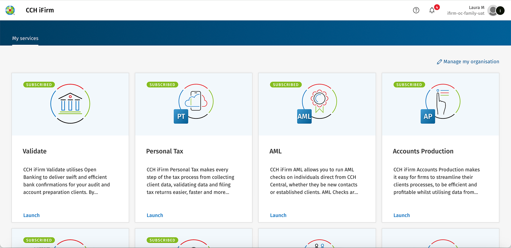
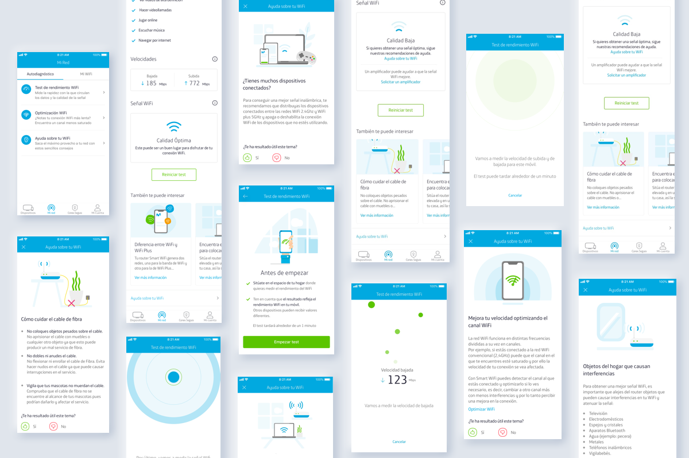

Hello, I’m Laura Benavente A Senior product Designer based in Madrid
With 8+ years of experience, I specialise in complex B2B SaaS, financial products and mobile experiences.
I combine strategic thinking, emerging technology and narrative interaction to create experiences people LOVE
From financial operations to product systems
I bring together financial-domain knowledge, systems thinking and product strategy to turn complex business operations into clear, connected and scalable experiences.
About me
- I’m endlessly curious about the world around me.
- I like design, technology, nature, strange ideas and
- the little connections between them.
Three ways I approachproduct problems
Different problems require different levels of thinking.
See the system
Wolters Kluwer ecosystemUnderstanding how products, workflows and people connect across a complex ecosystem.
Systems · Complexity · Scale
02Find the opportunity
Wolters Kluwer strategyLooking beyond the original requirement to identify where technology can genuinely change the product.
Product thinking · AI · Ambiguity
03Make the experience work
MovistarTaking product experiences end to end, designing interactions inside real technical constraints alongside the people building them
Interaction · Engineering · Execution

Story 1
Wolters Kluwer
ecosystem
Designing a cloud ecosystem for tax professionals

Story 2
Wolters Kluwer
strategy
Bringing AI-Assisted drafting inside the product, so professionals never start a client from an empty page.

Story 3
Movistar
Designing a self-diagnosis experience for home connectivity, where the test could not be made faster and the wait had to be made understandable.